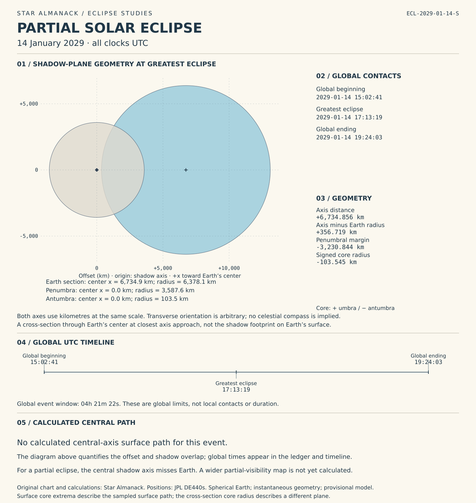

Partial solar eclipse
2029-01-14
Our calculated shadow diagram


Artwork generated by Star Almanack from its stored shadow geometry; Sun, Earth, and Moon positions use the credited JPL kernel.
Where to watch
Star Almanack has not yet calculated geographic visibility for this event.
What this eclipse means
The Moon passes between Earth and the Sun, but their alignment is not close enough for the Moon’s central shadow to reach Earth. From the visible region the Moon covers part of the Sun, leaving a bright crescent. No location sees totality or a complete ring during this event.
What to look for
With proper solar protection, follow the changing solar crescent. A pinhole projector can show its shape indirectly; small gaps between leaves may also project crescent-shaped images onto the ground. The amount covered depends on your location.
This event
- Greatest eclipse (UTC)
- January 14, 2029 at 17:13:19 UTC
- Position source
- JPL DE440s kernel; Star Almanack shadow geometry
Timing and phases
All times are UTC. Convert both date and time to your local time.
These are global limits, not contact times or duration at your location.
| Phase | UTC |
|---|---|
| Eclipse begins somewhere on Earth global_begin | |
| Greatest eclipse greatest_utc | |
| Eclipse ends everywhere on Earth global_end |
Durations derived from the stored times
- Global event window; not duration at one location (global_begin–global_end): 4 h 21 min 22 s
Calculated geometry
Stored catalog values at greatest eclipse. Signs and precision are retained as calculated.
| Quantity | Value | Meaning |
|---|---|---|
| Shadow-axis distance axis_distance_km | 6734.856 km | Closest distance of the Sun–Moon shadow axis from Earth’s center at greatest eclipse. |
| Penumbral margin penumbra_margin_km | -3230.844 km | Axis distance minus the sum of Earth’s radius and the penumbral radius; negative indicates overlap in the engine’s geometry. |
| Shadow-axis margin central_margin_km | 356.719 km | Axis distance minus Earth’s radius; negative means the shadow axis passes inside Earth’s radius. |
| Signed central-shadow radius core_radius_km | -103.545 km | Shadow-core radius at the plane of closest axis approach to Earth’s center. Positive denotes umbra; negative denotes antumbra. |
Watching the eclipse
Use eclipse glasses or a handheld solar viewer meeting ISO 12312-2 for direct viewing. Ordinary sunglasses are not suitable. Binoculars, cameras, and telescopes require purpose-made solar filters secured over the front of the optics; never look through them using eclipse glasses alone. Keep solar protection in place throughout this eclipse, including any annular ring.
Calculation records
Download complete stored record (JSON)
Sources
Sources: NASA: solar viewing safety
Explanatory text and eclipse calculations are original work by Star Almanack. The calculations use Sun, Earth, and Moon positions from JPL’s DE440s ephemeris kernel. Event times, shadow geometry, and the supplied central-path coordinates are calculated by Star Almanack from those positions.